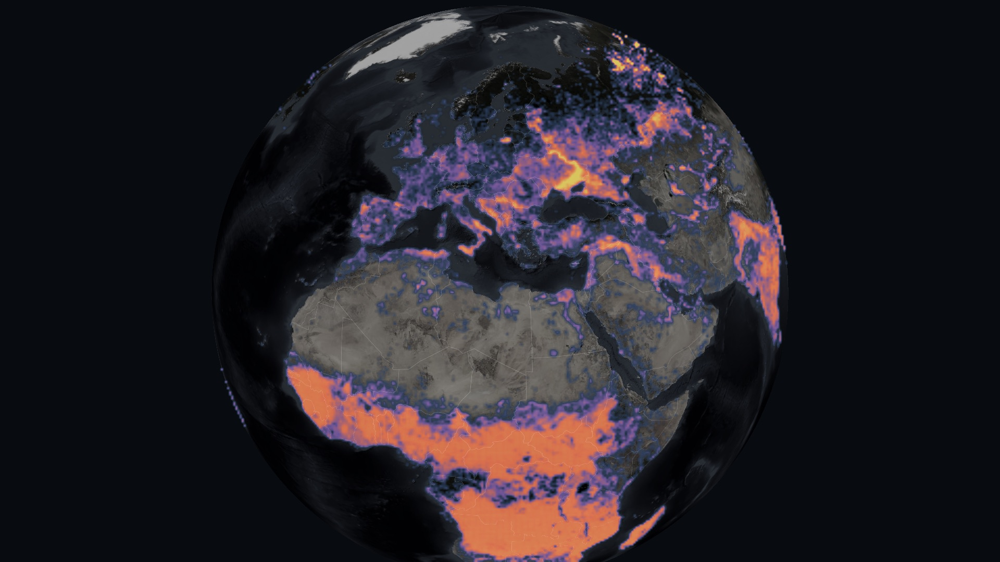
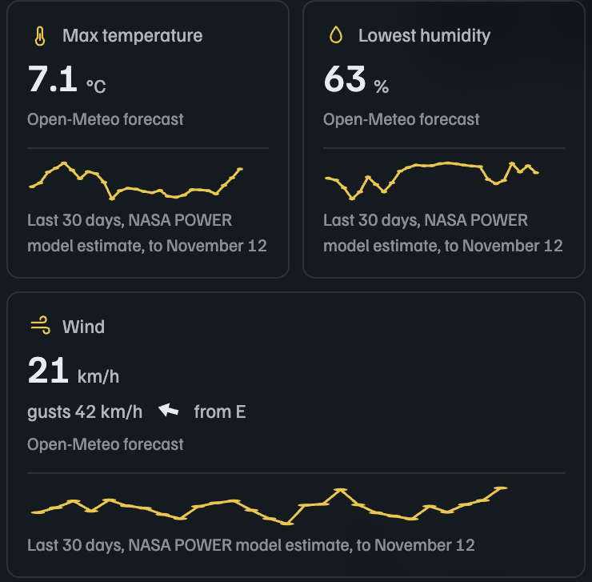
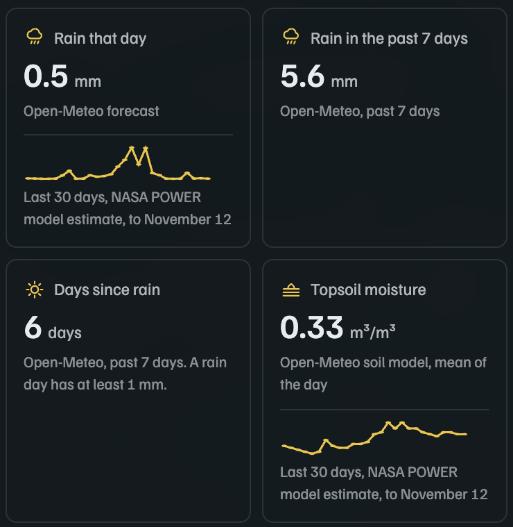

One fair fire record.
Tomorrow's fire risk.
Team Emerge, Sofia · NASA Space Apps 2026
Challenge: Harmonization of MODIS and VIIRS Hot Spots
We're Team Emerge, from Sofia. Our challenge was to join NASA's two satellite fire records into one. We did that, and then used it to show where fire is most likely to start tomorrow.
Fires are growing.
Crews have hours, not days.
France + Spain, Jul 2026
300,000+
people displaced by fires
EU, 2025
1.08 M ha
burned, the worst year on record
USA, 2026 so far
9.5 M acres
burned, nearly 2× 2025
Bulgaria, 2025
546
forest fires
This summer, more than three hundred thousand people fled fires in France and Spain. Europe just had its worst fire year on record, and America has burned nearly twice as much as last year. Every one of those fires was easier to stop in its first hour than in its fifth.
"Today we open about ten websites."
Our interview with a Bulgarian firefighter, 14 Nov 2026
Data sits on about 10 websites: EFFIS, NASA FIRMS, weather forecasts.
Decisions are made one day ahead, for tomorrow.
"We have no idea how accurate the forecasts are."
Prevention
Preparedness
Response
Recovery
effis.jrc.ec.europa.eu
firms.modaps.eosdis.nasa.gov
gwis.jrc.ec.europa.eu
weather forecast, today
weather forecast, week
wind map
fire danger map
satellite imagery
national fire reports
emerge-beta-ten.vercel.app
We interviewed a Bulgarian firefighter. He told us three things. Crews open about ten websites to plan a day. Decisions are made one day ahead. And nobody tells them how accurate any forecast is. His top need is prevention: knowing where fire will start tomorrow, so a team can stand there before it does.
NASA's 25-year fire record
broke in two in 2012.
MODIS sees 1 km pixels since 2000. VIIRS sees 375 m pixels since 2012.
×2.7
New satellite,
not more fire.
And the data behind every fire map has a crack in it. In 2012 NASA launched a sharper satellite. It sees almost three times more fire than the old one, over the same ground. Put the two records together and fire seems to triple overnight. So nobody can honestly say whether this summer was unusual compared with 2007.
Today's tools keep the satellites apart.
| One record, 2000 to today | Any point or area | Next-day risk, scored against fires |
|---|
| NASA FIRMS | Sensors side by side | Yes | No |
| GWIS (EU JRC) | Each sensor vs its own 10 years | Countries | Fire danger, not scored |
| EFFIS | Burned areas from 2006, fires of about 30 ha+ | Europe and neighbours | No |
| Greenpeace fire calendar | MODIS only, ends 2022 | 20 countries | No |
| Emerge | Yes, Nov 2000 to today | Yes, any point | Yes, published scorecard |
We build on FIRMS and GWIS. We don't replace them.
The official tools are excellent, and we use them. But they show the two satellites side by side, or compare each with its own ten years. The only fire calendar we found stops in 2022 and covers twenty countries. Nothing gives one record from 2000 to today for any point, plus a forecast that is checked against real fires.
Why now. Why us.
Why now
- Both satellites have flown together since 2012: enough years to learn the conversion
- Record fire seasons in Europe and the USA
- Open NASA data and machine learning: a scored next-day model in one weekend
Why us
Project managementPhysics3D and VRDesignAI and data
- A firefighter's needs from day one
- Every result tested on years the model never saw
Why now? The two satellites have flown together since 2012, long enough to learn how one sees compared with the other. Why us? We are a team of project management, physics, 3D and VR, design and AI people, and we started from a firefighter's needs, not from the data. Martin will show you what we built.
One place instead of ten websites.
One fair recordNov 2000 to today, 235 countries and territories, any point, with uncertainty ranges
One mapRain, wind, heat, soil moisture, greenness, land type, NASA fire weather
Tomorrow's riskTop spots per region, scored in public against NASA's own index
Emerge does three things in one place. It joins the two satellite records into one fair history, for any point on Earth. It stacks the conditions on one map. And it ranks where new fires are most likely tomorrow. Let me show you.
Click any point.
See it at a glance.
Risk level for that 28 km square, against what is usual there this month
7 conditions that drive fire: heat, humidity, wind, rain, dry days, soil moisture
Last 30 days under each, from NASA POWER


This is the heart of the product. Click any point on Earth and you get the answer at a glance: the fire risk level for that square, compared with what is usual there this month. Under it, the conditions that drive fire: heat, humidity, wind, rain, days since rain and soil moisture, each with its last thirty days from NASA. One click instead of ten tabs.
(0 s) Twenty-five years of fire, joined into one record. (6 s) Pick a country, Bulgaria: every month since 2000. Solid months are measured, striped ones are estimated from the older satellite, each with a range. (14 s) Or any point: here Sofia, with twenty-five kilometres around it. (20 s) Switch to the forecast: the same point shows tomorrow's level, then wind, rain, days since rain and soil moisture. (29 s) On one map we stack the fire record, rain, wind, heat, soil moisture, greenness and land type. (36 s) The risk outlook ranks tomorrow's top ten spots per region. Here Northern Territory in Australia: spot one is level three, about one in forty. (47 s) And every number links to the proof page, tested on 2025, a year the model never saw. (56 s) Pause on the logo, then next slide. (Space pauses or plays the video.)
Is the joined record right?
Tested on years it never saw.
Per 28 km square, month by month, we learn how VIIRS relates to MODIS in the years both flew, then convert 2000 to 2012.
- ~20% Bulgaria: average miss per month, 2019 to 2022
- ~14% USA, same test
- ~95% of months fell inside our 90% ranges
Is the joined history right? We trained the conversion on some years and tested it on 2019 to 2022, with the rules written before the test. Bulgaria misses by about twenty percent of an average month, the US by about fourteen, and our ninety percent ranges held about ninety-five percent of the time.
Nearly 2× the new fires caught,
against NASA's own index.
World, 2025, new fires caught in top 5 squares per region
NASA fire-weather index11.2%
Europe, same test
NASA fire-weather index41.1%
First live day, 14 Nov, worldwide: 156 of 752 new fires caught, vs 99 for NASA's index
And tomorrow's risk. On 2025, a year the model never saw, our top five squares per region caught twenty point four percent of new fires worldwide. NASA's own fire-weather index caught eleven. Random picks catch ten, and we show that number on purpose: a percentage only means something against the right baselines. In Europe it's fifty-four against forty-one. And since yesterday it runs live: first day, a hundred fifty-six fires caught against ninety-nine.
Who uses it
Fire services and forestry before the season. Municipalities checking if a season is unusual. Crews looking at tomorrow's ranked spots. Scientists. In English and Bulgarian.
Next
Yesterday's fires and human activity as inputs (negligence starts 57 to 66% of Bulgaria's forest fires), plant dryness, a daily public scorecard.
25 years of fire. One fair record.
Tomorrow's risk.
emerge-beta-ten.vercel.app
Fire services, forestry and municipalities can use it today, in English and Bulgarian. Next, we add yesterday's fires and human activity, because people start most fires, and a daily scorecard anyone can check. Twenty-five years of fire. One fair record. Tomorrow's risk. Thank you.
Backup
What doesn't work yet
- ~56% Bulgaria's history error in 2023 to 2025, the years of satellite drift
- ~4× City squares are overstated: Sofia about four times its own history
- levels Low probabilities are rough, so we show levels, not exact chances
Risk outlook (unofficial). A research prototype, not a warning system. Follow local authorities (112).
We publish the weak spots too. The newest years drift, cities are overstated, and low probabilities are rough, so we show levels, not exact chances. It's a research prototype, not a warning system.
Backup
How the conversion works
- Squares of 0.25° (about 28 km), month by month.
- For each country, 5° latitude band and calendar month: how VIIRS relates to MODIS in the years both flew (fitted 2012 to 2018), pulled towards the country and world average where data is thin.
- Plus a small background term for months MODIS saw nothing. Then Nov 2000 to early 2012 is converted to VIIRS level.
- 203 countries with enough fire: the middle country misses by about 40%; big fire countries about 22%; the smallest third about 107%.
Backup for questions on the conversion.
Backup
How the risk model works
- Gradient-boosted trees (LightGBM) rank forest and wildland squares for tomorrow.
- Inputs: NASA's fire-weather forecast made 3 days ahead, earlier fire history, recent nearby fires, land type.
- Only data up to two days before the forecast day.
- Gain over NASA's index in Europe: 12.7 points, 95% interval 11.2 to 14.2.
- Greenness and soil moisture are map layers, not model inputs yet.
Backup for questions on the model.
Backup
Why not 80 or 90%?
- Picking 5 squares at random already catches 39.4% in Europe, because some regions are small.
- Published 80 to 90% figures come from tests with equal shares of fire and no-fire days.
- Strict published measures for next-day ignitions are 8 to 25%.
- We publish the baselines so the number can be judged.
Backup for accuracy questions.
Backup
Data and AI
- 22 open data sources, 11 from NASA: FIRMS (MODIS, VIIRS), GFWED fire weather, IMERG rain, SMAP soil moisture, VIIRS greenness, MODIS land cover, POWER, GIBS.
- AI coding assistants worked under the team's direction.
- Expected answers were written before the code by a separate agent; results were checked against real satellite data.
- Code and data are open source.
Backup for data and AI-use questions.